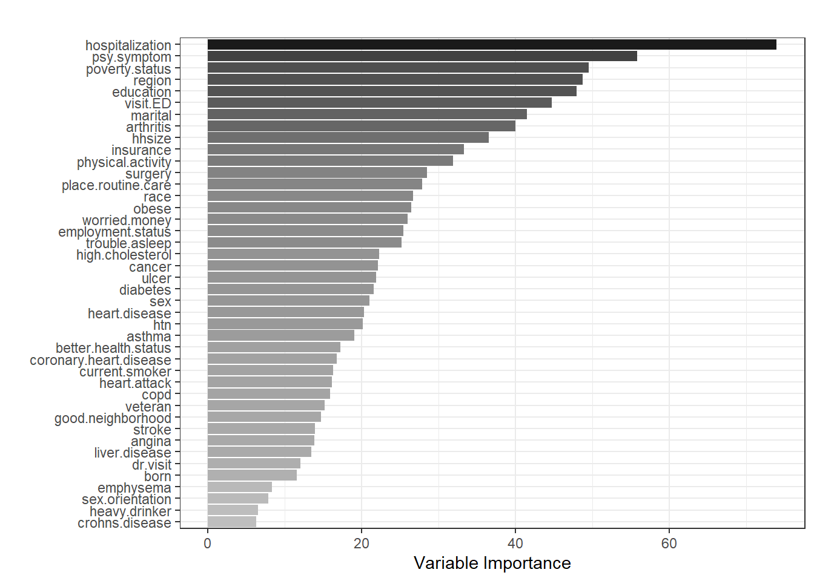

Replicate Results
The tutorial aims to guide the users through fitting machine learning techniques with health survey data. We will replicate some of the results of this article by Falasinnu et al. (2023).
Falasinnu T, Hossain MB, Weber II KA, Helmick CG, Karim ME, Mackey S. The Problem of Pain in the United States: A Population-Based Characterization of Biopsychosocial Correlates of High Impact Chronic Pain Using the National Health Interview Survey. The Journal of Pain. 2023;24(6):1094-103. DOI: 10.1016/j.jpain.2023.03.008
The authors used the National Health Interview Survey (NHIS) 2016 dataset to develop prediction models for predicting high impact chronic pain (HICP). They also evaluated the predictive performances of the models within sociodemographic subgroups, such as sex (male, female), age (\(<65\), \(\ge 65\)), and race/ethnicity (White, Black, Hispanic). They used LASSO and random forest models with 5-fold cross-validation as an internal validation. To obtain population-level predictions, they account for survey weights in both models.
For those interested in the National Health Interview Survey (NHIS) dataset, can review the earlier tutorial about the dataset.
To handle missing data in the predictors, they used multiple imputation technique. However, for simplicity, this tutorial focuses on a complete case dataset. We will also only focus on predicting HICP for people aged 65 years or older (a dataset of ~8,800 participants compared to the dataset of 33,000 participants aged 18 years or older).
Load packages
We load several R packages required for fitting LASSO and random forest models.
Analytic dataset
Load
We load the dataset into the R environment and lists all available variables and objects.
The dataset contains 8,881 participants aged 65 years or older with 49 variables:
-
studyid: Unique identifier -
psu: Pseudo-PSU -
strata: Pseudo-stratum -
weight: Sampling weight -
HICP: HICP (binary outcome variable) -
age: Age -
sex: Sex -
hhsize: Number of people in household -
born: Citizenship -
marital: Marital status -
region: Region -
race: Race/ethnicity -
education: Education -
employment.status: Employment status -
poverty.status: Poverty status -
veteran: Veteran -
insurance: Health insurance coverage -
sex.orientation: Sexual orientation -
worried.money: Worried about money -
good.neighborhood: Good neighborhood -
psy.symptom: Psychological symptoms -
visit.ED: Number of times in ER/ED -
surgery: Number of surgeries in past 12 months -
dr.visit: Time since doctor visits -
cancer: Cancer -
asthma: Asthma -
htn: Hypertension -
liver.disease: Liver disease -
diabetes: Diabetes -
ulcer: Ulcer -
stroke: Stroke -
emphysema: Emphysema -
copd: COPD -
high.cholesterol: High cholesterol -
coronary.heart.disease: Coronary heart disease -
angina: Angina pectoris -
heart.attack: Heart attack -
heart.disease: Heart condition/disease -
arthritis: Arthritis and rheumatism -
crohns.disease: Crohn’s disease -
place.routine.care: Usual place for routine care -
trouble.asleep: Trouble falling asleep -
obese: Obesity -
current.smoker: Current smoker -
heavy.drinker: Heavy drinker -
hospitalization: Hospital stay days -
better.health.status: Better health status -
physical.activity: Physical activity
See the NHIS 2016 dataset and the article for better understanding of the variables.
Complete case data
Let us consider a complete case dataset
As we can see, there are 7,280 participants with complete case information. Let’s see the descriptive statistics of the predictors stratified by HICP.
Descriptive statistics
# Predictors
predictors <- c("sex", "hhsize", "born", "marital",
"region", "race", "education",
"employment.status", "poverty.status",
"veteran", "insurance",
"sex.orientation", "worried.money",
"good.neighborhood",
"psy.symptom", "visit.ED", "surgery",
"dr.visit", "cancer",
"asthma", "htn", "liver.disease",
"diabetes", "ulcer", "stroke",
"emphysema", "copd", "high.cholesterol",
"coronary.heart.disease",
"angina", "heart.attack",
"heart.disease", "arthritis",
"crohns.disease", "place.routine.care",
"trouble.asleep", "obese",
"current.smoker", "heavy.drinker",
"hospitalization",
"better.health.status",
"physical.activity")
# Table 1 - Unweighted
tbl_summary(data = dat.complete,
include = predictors,
by = HICP, missing = "no") %>%
modify_spanning_header(c("stat_1",
"stat_2") ~ "**HICP**")| Characteristic | HICP | |
|---|---|---|
| 0, N = 6,3891 | 1, N = 8911 | |
| sex | ||
| Female | 3,587 (56%) | 569 (64%) |
| Male | 2,802 (44%) | 322 (36%) |
| hhsize | 2 (1, 2) | 2 (1, 2) |
| born | ||
| Born in US | 5,775 (90%) | 802 (90%) |
| Other place | 614 (9.6%) | 89 (10.0%) |
| marital | ||
| Never married | 411 (6.4%) | 57 (6.4%) |
| Married/with partner | 2,990 (47%) | 349 (39%) |
| Divorced/separated | 1,161 (18%) | 179 (20%) |
| Widowed | 1,827 (29%) | 306 (34%) |
| region | ||
| Northeast | 1,172 (18%) | 143 (16%) |
| Midwest | 1,451 (23%) | 189 (21%) |
| South | 2,203 (34%) | 331 (37%) |
| West | 1,563 (24%) | 228 (26%) |
| race | ||
| White | 5,090 (80%) | 694 (78%) |
| Black | 564 (8.8%) | 88 (9.9%) |
| Hispanic | 406 (6.4%) | 70 (7.9%) |
| Others | 329 (5.1%) | 39 (4.4%) |
| education | ||
| Less than high school | 954 (15%) | 220 (25%) |
| High school/GED | 1,863 (29%) | 269 (30%) |
| Some college | 1,716 (27%) | 248 (28%) |
| Bachelors degree or higher | 1,856 (29%) | 154 (17%) |
| employment.status | ||
| Employed hourly | 578 (9.0%) | 22 (2.5%) |
| Employed non-hourly | 608 (9.5%) | 27 (3.0%) |
| Worked previously | 4,923 (77%) | 777 (87%) |
| Never worked | 280 (4.4%) | 65 (7.3%) |
| poverty.status | ||
| <100% FPL | 496 (7.8%) | 154 (17%) |
| 100-200% FPL | 1,401 (22%) | 276 (31%) |
| 200-400% FPL | 2,157 (34%) | 283 (32%) |
| 400%+ FPL | 2,335 (37%) | 178 (20%) |
| veteran | 1,482 (23%) | 163 (18%) |
| insurance | ||
| Uninsured | 32 (0.5%) | 6 (0.7%) |
| Medicaid/Medicare | 2,995 (47%) | 478 (54%) |
| Privately Insured | 2,847 (45%) | 311 (35%) |
| Other | 515 (8.1%) | 96 (11%) |
| sex.orientation | ||
| Heterosexual | 6,224 (97%) | 861 (97%) |
| Other | 165 (2.6%) | 30 (3.4%) |
| worried.money | 2,351 (37%) | 491 (55%) |
| good.neighborhood | 5,988 (94%) | 781 (88%) |
| psy.symptom | 694 (11%) | 353 (40%) |
| visit.ED | ||
| None | 5,050 (79%) | 531 (60%) |
| One | 949 (15%) | 187 (21%) |
| 2-3 | 313 (4.9%) | 123 (14%) |
| 4+ | 77 (1.2%) | 50 (5.6%) |
| surgery | ||
| None | 5,218 (82%) | 650 (73%) |
| One | 898 (14%) | 176 (20%) |
| Two | 206 (3.2%) | 44 (4.9%) |
| 3+ | 67 (1.0%) | 21 (2.4%) |
| dr.visit | ||
| <6 months | 5,390 (84%) | 837 (94%) |
| 6-12 months | 591 (9.3%) | 41 (4.6%) |
| 1-5 years | 281 (4.4%) | 10 (1.1%) |
| >5 years/never | 127 (2.0%) | 3 (0.3%) |
| cancer | 1,566 (25%) | 271 (30%) |
| asthma | 645 (10%) | 176 (20%) |
| htn | 3,953 (62%) | 689 (77%) |
| liver.disease | 122 (1.9%) | 50 (5.6%) |
| diabetes | 1,179 (18%) | 278 (31%) |
| ulcer | 545 (8.5%) | 161 (18%) |
| stroke | 485 (7.6%) | 130 (15%) |
| emphysema | 235 (3.7%) | 76 (8.5%) |
| copd | 496 (7.8%) | 145 (16%) |
| high.cholesterol | 3,373 (53%) | 577 (65%) |
| coronary.heart.disease | 814 (13%) | 211 (24%) |
| angina | 298 (4.7%) | 100 (11%) |
| heart.attack | 552 (8.6%) | 154 (17%) |
| heart.disease | 1,083 (17%) | 210 (24%) |
| arthritis | 3,017 (47%) | 700 (79%) |
| crohns.disease | 102 (1.6%) | 29 (3.3%) |
| place.routine.care | ||
| No place | 235 (3.7%) | 26 (2.9%) |
| Doctor's office | 4,634 (73%) | 621 (70%) |
| Hospital/Clinic | 1,403 (22%) | 221 (25%) |
| Other place | 117 (1.8%) | 23 (2.6%) |
| trouble.asleep | 1,970 (31%) | 424 (48%) |
| obese | 1,757 (28%) | 397 (45%) |
| current.smoker | 565 (8.8%) | 111 (12%) |
| heavy.drinker | 308 (4.8%) | 25 (2.8%) |
| hospitalization | ||
| None | 5,009 (78%) | 503 (56%) |
| 1-2 days | 592 (9.3%) | 57 (6.4%) |
| 3-5 days | 360 (5.6%) | 63 (7.1%) |
| 6+ days | 428 (6.7%) | 268 (30%) |
| better.health.status | 890 (14%) | 119 (13%) |
| physical.activity | ||
| Less | 3,734 (58%) | 743 (83%) |
| Moderate | 1,794 (28%) | 108 (12%) |
| High | 861 (13%) | 40 (4.5%) |
| 1 n (%); Median (IQR) | ||
LASSO for surveys
Now, we will fit the LASSO model for predicting binary HICP with the listed predictors. Similar to the previous chapter, we will normalize the weight.
Weight normalization
# Normalize weight
dat.complete$wgt <- dat.complete$weight *
nrow(dat.complete)/sum(dat.complete$weight)
# Weight summary
summary(dat.complete$weight)
#> Min. 1st Qu. Median Mean 3rd Qu. Max.
#> 243 1503 2583 2886 3747 14662
summary(dat.complete$wgt)
#> Min. 1st Qu. Median Mean 3rd Qu. Max.
#> 0.0842 0.5208 0.8950 1.0000 1.2983 5.0804
# The weighted and unweighted n are equal
nrow(dat.complete)
#> [1] 7280
sum(dat.complete$wgt)
#> [1] 7280Folds
Let’s create five random folds and specify the regression formula.
Formula
Formula <- formula(paste("HICP ~ ", paste(predictors,
collapse=" + ")))
Formula
#> HICP ~ sex + hhsize + born + marital + region + race + education +
#> employment.status + poverty.status + veteran + insurance +
#> sex.orientation + worried.money + good.neighborhood + psy.symptom +
#> visit.ED + surgery + dr.visit + cancer + asthma + htn + liver.disease +
#> diabetes + ulcer + stroke + emphysema + copd + high.cholesterol +
#> coronary.heart.disease + angina + heart.attack + heart.disease +
#> arthritis + crohns.disease + place.routine.care + trouble.asleep +
#> obese + current.smoker + heavy.drinker + hospitalization +
#> better.health.status + physical.activity5-fold CV LASSO
Now, we will fit the LASSO model with 5-fold cross-validation (CV). Here are the steps:
- For fold 1, folds 2-5 is the training set and fold 1 is the test set
- Fit 5-fold cross-validation on the training set to find the value of lambda that gives minimum prediction error. Incorporate sampling weights in the model to account for survey design.
- Fit LASSO on the training with the optimum lambda from the previous step. Incorporate sampling weights in the model to account for survey design.
- Calculate predictive performance (e.g., AUC) on the test set
- Repeat the analysis for all folds.
fit.lasso <- list(NULL)
auc.lasso <- NULL
cal.slope.lasso <- NULL
brier.lasso <- NULL
for (fold in 1:k) {
# Training data
dat.train <- dat.complete[nfolds != fold, ]
X.train <- model.matrix(Formula, dat.train)[,-1]
y.train <- as.matrix(dat.train$HICP)
# Test data
dat.test <- dat.complete[nfolds == fold, ]
X.test <- model.matrix(Formula, dat.test)[,-1]
y.test <- as.matrix(dat.test$HICP)
# Find the optimum lambda using 5-fold CV
fit.cv.lasso <- cv.glmnet(x = X.train,
y = y.train,
nfolds = 5,
alpha = 1,
family = "binomial",
weights = dat.train$wgt)
# Fit the model on the training set with optimum lambda
fit.lasso[[fold]] <- glmnet(
x = X.train,
y = y.train,
alpha = 1,
family = "binomial",
lambda = fit.cv.lasso$lambda.min,
weights = dat.train$wgt)
# Prediction on the test set
dat.test$pred.lasso <- predict(fit.lasso[[fold]],
newx = X.test,
type = "response")
# AUC on the test set with sampling weights
auc.lasso[fold] <- WeightedAUC(
WeightedROC(dat.test$pred.lasso,
dat.test$HICP,
weight = dat.test$wgt))
# Weighted calibration slope
mod.cal <- glm(
HICP ~ Logit(dat.test$pred.lasso),
data = dat.test,
family = binomial,
weights = wgt)
cal.slope.lasso[fold] <- summary(mod.cal)$coef[2,1]
# Weighted Brier Score
brier.lasso[fold] <- mean(
brierscore(HICP ~ dat.test$pred.lasso,
data = dat.test,
wt = dat.test$wgt))
}Model performance
Let’s check how prediction worked.
# Fitted LASSO models
fit.lasso[[1]]
#>
#> Call: glmnet(x = X.train, y = y.train, family = "binomial", weights = dat.train$wgt, alpha = 1, lambda = fit.cv.lasso$lambda.min)
#>
#> Df %Dev Lambda
#> 1 46 23.91 0.002972
fit.lasso[[2]]
#>
#> Call: glmnet(x = X.train, y = y.train, family = "binomial", weights = dat.train$wgt, alpha = 1, lambda = fit.cv.lasso$lambda.min)
#>
#> Df %Dev Lambda
#> 1 47 25.32 0.002559
fit.lasso[[3]]
#>
#> Call: glmnet(x = X.train, y = y.train, family = "binomial", weights = dat.train$wgt, alpha = 1, lambda = fit.cv.lasso$lambda.min)
#>
#> Df %Dev Lambda
#> 1 47 24.3 0.002724
fit.lasso[[4]]
#>
#> Call: glmnet(x = X.train, y = y.train, family = "binomial", weights = dat.train$wgt, alpha = 1, lambda = fit.cv.lasso$lambda.min)
#>
#> Df %Dev Lambda
#> 1 34 25.27 0.004726
fit.lasso[[5]]
#>
#> Call: glmnet(x = X.train, y = y.train, family = "binomial", weights = dat.train$wgt, alpha = 1, lambda = fit.cv.lasso$lambda.min)
#>
#> Df %Dev Lambda
#> 1 39 24.32 0.003525# Beta coefficients from the LASSO models in different folds
fit.lasso[[1]]$beta
#> 67 x 1 sparse Matrix of class "dgCMatrix"
#> s0
#> sexMale .
#> hhsize 0.0092060605
#> bornOther place .
#> maritalMarried/with partner .
#> maritalDivorced/separated .
#> maritalWidowed 0.0926365970
#> regionMidwest .
#> regionSouth .
#> regionWest 0.1470219542
#> raceBlack -0.0436983700
#> raceHispanic .
#> raceOthers .
#> educationHigh school/GED .
#> educationSome college .
#> educationBachelors degree or higher .
#> employment.statusEmployed non-hourly .
#> employment.statusWorked previously 0.5412332930
#> employment.statusNever worked 0.8300536966
#> poverty.status100-200% FPL 0.0636289868
#> poverty.status200-400% FPL -0.0697612513
#> poverty.status400%+ FPL -0.2887583235
#> veteranYes -0.0300714331
#> insuranceMedicaid/Medicare .
#> insurancePrivately Insured -0.0924641963
#> insuranceOther 0.1503323815
#> sex.orientationOther 0.0765093892
#> worried.moneyYes 0.2812674935
#> good.neighborhoodYes -0.2491796538
#> psy.symptomYes 0.9726200151
#> visit.EDOne 0.0674459188
#> visit.ED2-3 0.1375781535
#> visit.ED4+ 0.4225671575
#> surgeryOne .
#> surgeryTwo .
#> surgery3+ -0.0839622285
#> dr.visit6-12 months -0.2120063637
#> dr.visit1-5 years -0.4068474570
#> dr.visit>5 years/never -0.1453128227
#> cancerYes 0.0993613856
#> asthmaYes 0.2997325771
#> htnYes 0.2082877598
#> liver.diseaseYes 0.8058966864
#> diabetesYes 0.0007357323
#> ulcerYes 0.4180133887
#> strokeYes .
#> emphysemaYes -0.0509549802
#> copdYes 0.1002374105
#> high.cholesterolYes 0.1021030868
#> coronary.heart.diseaseYes 0.0220558291
#> anginaYes 0.0849595261
#> heart.attackYes 0.2476656673
#> heart.diseaseYes .
#> arthritisYes 0.9746692568
#> crohns.diseaseYes .
#> place.routine.careDoctor's office -0.0583977619
#> place.routine.careHospital/Clinic .
#> place.routine.careOther place .
#> trouble.asleepYes 0.2030296869
#> obeseYes 0.3879895531
#> current.smokerYes 0.3374178965
#> heavy.drinkerYes -0.1268971235
#> hospitalization1-2 days 0.1192556336
#> hospitalization3-5 days .
#> hospitalization6+ days 1.0866087297
#> better.health.statusYes -0.1013785074
#> physical.activityModerate -0.7523741651
#> physical.activityHigh -0.6865233686
fit.lasso[[2]]$beta
#> 67 x 1 sparse Matrix of class "dgCMatrix"
#> s0
#> sexMale .
#> hhsize 0.018493189
#> bornOther place .
#> maritalMarried/with partner .
#> maritalDivorced/separated -0.001903136
#> maritalWidowed .
#> regionMidwest -0.077656662
#> regionSouth 0.066061919
#> regionWest 0.198988965
#> raceBlack -0.313705357
#> raceHispanic -0.160881871
#> raceOthers .
#> educationHigh school/GED -0.073948767
#> educationSome college .
#> educationBachelors degree or higher -0.092601336
#> employment.statusEmployed non-hourly .
#> employment.statusWorked previously 0.662301617
#> employment.statusNever worked 0.990458783
#> poverty.status100-200% FPL .
#> poverty.status200-400% FPL -0.253983648
#> poverty.status400%+ FPL -0.485846823
#> veteranYes -0.095649252
#> insuranceMedicaid/Medicare .
#> insurancePrivately Insured -0.005530756
#> insuranceOther 0.249278523
#> sex.orientationOther .
#> worried.moneyYes 0.301627606
#> good.neighborhoodYes -0.554793692
#> psy.symptomYes 0.975043141
#> visit.EDOne 0.058872693
#> visit.ED2-3 0.255785667
#> visit.ED4+ 0.422172434
#> surgeryOne 0.002831717
#> surgeryTwo 0.099101540
#> surgery3+ .
#> dr.visit6-12 months -0.105087667
#> dr.visit1-5 years -0.381233762
#> dr.visit>5 years/never -0.459656177
#> cancerYes 0.281041121
#> asthmaYes 0.427654297
#> htnYes 0.219625784
#> liver.diseaseYes 0.580991873
#> diabetesYes .
#> ulcerYes 0.348542693
#> strokeYes 0.070369016
#> emphysemaYes .
#> copdYes .
#> high.cholesterolYes 0.150862244
#> coronary.heart.diseaseYes 0.009536678
#> anginaYes .
#> heart.attackYes 0.405053759
#> heart.diseaseYes .
#> arthritisYes 0.954063592
#> crohns.diseaseYes .
#> place.routine.careDoctor's office -0.045764606
#> place.routine.careHospital/Clinic .
#> place.routine.careOther place 0.207253975
#> trouble.asleepYes 0.212898902
#> obeseYes 0.389340100
#> current.smokerYes 0.332982403
#> heavy.drinkerYes -0.135194457
#> hospitalization1-2 days .
#> hospitalization3-5 days .
#> hospitalization6+ days 1.018420971
#> better.health.statusYes -0.001173805
#> physical.activityModerate -0.703703292
#> physical.activityHigh -0.677811398
fit.lasso[[3]]$beta
#> 67 x 1 sparse Matrix of class "dgCMatrix"
#> s0
#> sexMale -0.03555390
#> hhsize 0.01276707
#> bornOther place .
#> maritalMarried/with partner -0.00226132
#> maritalDivorced/separated .
#> maritalWidowed .
#> regionMidwest .
#> regionSouth .
#> regionWest 0.25300309
#> raceBlack -0.21629021
#> raceHispanic .
#> raceOthers 0.07458935
#> educationHigh school/GED -0.07527970
#> educationSome college .
#> educationBachelors degree or higher -0.08524865
#> employment.statusEmployed non-hourly .
#> employment.statusWorked previously 0.66693373
#> employment.statusNever worked 0.96274685
#> poverty.status100-200% FPL .
#> poverty.status200-400% FPL -0.11543598
#> poverty.status400%+ FPL -0.31422327
#> veteranYes -0.08849244
#> insuranceMedicaid/Medicare .
#> insurancePrivately Insured -0.14856615
#> insuranceOther 0.14368311
#> sex.orientationOther .
#> worried.moneyYes 0.28107756
#> good.neighborhoodYes -0.37214169
#> psy.symptomYes 1.02129791
#> visit.EDOne 0.11427725
#> visit.ED2-3 0.23654896
#> visit.ED4+ 0.53011900
#> surgeryOne 0.06030144
#> surgeryTwo .
#> surgery3+ -0.28355643
#> dr.visit6-12 months -0.04219568
#> dr.visit1-5 years -0.83131719
#> dr.visit>5 years/never -0.48832578
#> cancerYes 0.18366379
#> asthmaYes 0.13556093
#> htnYes 0.12622357
#> liver.diseaseYes 0.62123990
#> diabetesYes .
#> ulcerYes 0.39650846
#> strokeYes .
#> emphysemaYes .
#> copdYes 0.16563326
#> high.cholesterolYes 0.10541633
#> coronary.heart.diseaseYes 0.08229669
#> anginaYes .
#> heart.attackYes 0.37154172
#> heart.diseaseYes .
#> arthritisYes 0.91902311
#> crohns.diseaseYes -0.01478240
#> place.routine.careDoctor's office -0.04968533
#> place.routine.careHospital/Clinic .
#> place.routine.careOther place 0.20094580
#> trouble.asleepYes 0.07725267
#> obeseYes 0.40542559
#> current.smokerYes 0.27207489
#> heavy.drinkerYes -0.06932537
#> hospitalization1-2 days -0.13525647
#> hospitalization3-5 days .
#> hospitalization6+ days 1.02580763
#> better.health.statusYes .
#> physical.activityModerate -0.74686507
#> physical.activityHigh -0.90554222
fit.lasso[[4]]$beta
#> 67 x 1 sparse Matrix of class "dgCMatrix"
#> s0
#> sexMale .
#> hhsize .
#> bornOther place .
#> maritalMarried/with partner .
#> maritalDivorced/separated .
#> maritalWidowed .
#> regionMidwest .
#> regionSouth .
#> regionWest 0.151732262
#> raceBlack -0.063747960
#> raceHispanic .
#> raceOthers .
#> educationHigh school/GED .
#> educationSome college .
#> educationBachelors degree or higher .
#> employment.statusEmployed non-hourly .
#> employment.statusWorked previously 0.521879242
#> employment.statusNever worked 0.671265401
#> poverty.status100-200% FPL .
#> poverty.status200-400% FPL -0.014851029
#> poverty.status400%+ FPL -0.229122884
#> veteranYes .
#> insuranceMedicaid/Medicare .
#> insurancePrivately Insured -0.092128877
#> insuranceOther .
#> sex.orientationOther 0.150490732
#> worried.moneyYes 0.282333603
#> good.neighborhoodYes -0.104236603
#> psy.symptomYes 1.132555465
#> visit.EDOne 0.009230339
#> visit.ED2-3 0.288663967
#> visit.ED4+ 0.673934923
#> surgeryOne .
#> surgeryTwo .
#> surgery3+ .
#> dr.visit6-12 months -0.018831608
#> dr.visit1-5 years -0.496368171
#> dr.visit>5 years/never -0.415165313
#> cancerYes .
#> asthmaYes 0.240957776
#> htnYes 0.125845727
#> liver.diseaseYes 0.672282863
#> diabetesYes .
#> ulcerYes 0.352645788
#> strokeYes .
#> emphysemaYes .
#> copdYes 0.054275559
#> high.cholesterolYes 0.057735457
#> coronary.heart.diseaseYes 0.070550439
#> anginaYes .
#> heart.attackYes 0.234807175
#> heart.diseaseYes .
#> arthritisYes 1.043934915
#> crohns.diseaseYes 0.086038829
#> place.routine.careDoctor's office .
#> place.routine.careHospital/Clinic .
#> place.routine.careOther place .
#> trouble.asleepYes 0.177916442
#> obeseYes 0.363088024
#> current.smokerYes 0.339985811
#> heavy.drinkerYes .
#> hospitalization1-2 days .
#> hospitalization3-5 days 0.073321609
#> hospitalization6+ days 1.066617646
#> better.health.statusYes .
#> physical.activityModerate -0.699175264
#> physical.activityHigh -0.642594150
fit.lasso[[5]]$beta
#> 67 x 1 sparse Matrix of class "dgCMatrix"
#> s0
#> sexMale .
#> hhsize 0.01585559
#> bornOther place .
#> maritalMarried/with partner .
#> maritalDivorced/separated -0.04982466
#> maritalWidowed 0.03837620
#> regionMidwest -0.25040909
#> regionSouth .
#> regionWest 0.08288425
#> raceBlack -0.07020324
#> raceHispanic .
#> raceOthers .
#> educationHigh school/GED .
#> educationSome college .
#> educationBachelors degree or higher .
#> employment.statusEmployed non-hourly .
#> employment.statusWorked previously 0.64497666
#> employment.statusNever worked 0.83560645
#> poverty.status100-200% FPL .
#> poverty.status200-400% FPL -0.03113577
#> poverty.status400%+ FPL -0.22313059
#> veteranYes -0.20269803
#> insuranceMedicaid/Medicare .
#> insurancePrivately Insured -0.14170986
#> insuranceOther 0.19604683
#> sex.orientationOther .
#> worried.moneyYes 0.31572735
#> good.neighborhoodYes -0.31850186
#> psy.symptomYes 1.15194136
#> visit.EDOne 0.05961452
#> visit.ED2-3 0.34349175
#> visit.ED4+ 0.25637410
#> surgeryOne .
#> surgeryTwo .
#> surgery3+ .
#> dr.visit6-12 months .
#> dr.visit1-5 years -0.32790023
#> dr.visit>5 years/never .
#> cancerYes 0.21372688
#> asthmaYes 0.21206722
#> htnYes 0.13025900
#> liver.diseaseYes 0.44892643
#> diabetesYes 0.05119678
#> ulcerYes 0.27325347
#> strokeYes .
#> emphysemaYes .
#> copdYes 0.04954730
#> high.cholesterolYes 0.14824572
#> coronary.heart.diseaseYes .
#> anginaYes .
#> heart.attackYes 0.27924438
#> heart.diseaseYes .
#> arthritisYes 1.00382986
#> crohns.diseaseYes .
#> place.routine.careDoctor's office -0.01943640
#> place.routine.careHospital/Clinic .
#> place.routine.careOther place 0.07273335
#> trouble.asleepYes 0.14684831
#> obeseYes 0.38029871
#> current.smokerYes 0.14111139
#> heavy.drinkerYes .
#> hospitalization1-2 days -0.02310396
#> hospitalization3-5 days .
#> hospitalization6+ days 1.08731840
#> better.health.statusYes .
#> physical.activityModerate -0.76639891
#> physical.activityHigh -0.38546251# AUCs from different folds
auc.lasso
#> [1] 0.8396619 0.8129805 0.8465035 0.7896878 0.8342721
# Calibration slope from different folds
cal.slope.lasso
#> [1] 1.1287166 0.9985467 1.1224240 0.8934633 1.0131154
# Brier score from different folds
brier.lasso
#> [1] 0.08524781 0.08476661 0.08666820 0.09071329 0.08911735Now we will average out the model performance measures:
Although the authors used multiple imputation, our AUC from the LASSO model with complete case data analysis is not that different. Note: the authors reported the AUC values in Table 2.
Random forest for surveys
Now, we will fit the random forest model for predicting binary HICP with the listed predictors. Here are the steps for fitting the model with 5-fold CV:
- For fold 1, folds 2-5 is the training set and fold 1 is the test set
- Fit random forest model on the training set to find the value of the hyperparameters (number of trees, number of predictors to split at in each node, and minimal node size to split at) that gives minimum prediction error. Incorporate sampling weights in the model to account for survey design.
- Grid-search with out-of-sample error approach is widely used in the literature. In this approach, we create a data frame from all combinations of the hyperparameters and check which combination gives the lowest out-of-sample error.
- Fit the random forest model on the training with the selected hyperparameters from the previous step. Incorporate sampling weights in the model to account for survey design.
- Calculate predictive performance (e.g., AUC) on the test set
- Repeat the analysis for all folds.
Folds
Formula
Formula
#> HICP ~ sex + hhsize + born + marital + region + race + education +
#> employment.status + poverty.status + veteran + insurance +
#> sex.orientation + worried.money + good.neighborhood + psy.symptom +
#> visit.ED + surgery + dr.visit + cancer + asthma + htn + liver.disease +
#> diabetes + ulcer + stroke + emphysema + copd + high.cholesterol +
#> coronary.heart.disease + angina + heart.attack + heart.disease +
#> arthritis + crohns.disease + place.routine.care + trouble.asleep +
#> obese + current.smoker + heavy.drinker + hospitalization +
#> better.health.status + physical.activity5-fold CV random forest
fit.rf <- list(NULL)
auc.rf <- NULL
cal.slope.rf <- brier.rf <- NULL
for (fold in 1:k) {
# Training data
dat.train <- dat.complete[nfolds != fold, ]
# Test data
dat.test <- dat.complete[nfolds == fold, ]
# Tuning the hyperparameters
## Grid with 1000 models - huge time consuming
#grid.search <- expand.grid(mtry = 1:10, node.size = 1:10,
# num.trees = seq(50,500,50),
# OOB_RMSE = 0)
## Grid with 36 models as an exercise
grid.search <- expand.grid(
mtry = 5:7,
node.size = 1:3,
num.trees = seq(200,500,100),
OOB_RMSE = 0)
## Model with grids
for(ii in 1:nrow(grid.search)) {
# Model on training set with grid
fit.rf.tune <- ranger(
formula = Formula,
data = dat.train,
num.trees = grid.search$num.trees[ii],
mtry = grid.search$mtry[ii],
min.node.size = grid.search$node.size[ii],
importance = 'impurity',
case.weights = dat.train$wgt)
# Add Out-of-bag (OOB) error to grid
grid.search$OOB_RMSE[ii] <-
sqrt(fit.rf.tune$prediction.error)
}
# Position of the tuned hyperparameters
position <- which.min(grid.search$OOB_RMSE)
# Fit the model on the training set with tuned hyperparameters
fit.rf[[fold]] <- ranger(
formula = Formula,
data = dat.train,
case.weights = dat.train$wgt,
probability = T,
num.trees = grid.search$num.trees[position],
min.node.size = grid.search$node.size[position],
mtry = grid.search$mtry[position],
importance = 'impurity')
# Prediction on the test set
dat.test$pred.rf <- predict(
fit.rf[[fold]],
data = dat.test)$predictions[,2]
# AUC on the test set with sampling weights
auc.rf[fold] <- WeightedAUC(
WeightedROC(dat.test$pred.rf,
dat.test$HICP,
weight = dat.test$wgt))
# Weighted calibration slope
dat.test$pred.rf[dat.test$pred.rf == 0] <- 0.00001
mod.cal <- glm(HICP ~ Logit(dat.test$pred.rf),
data = dat.test,
family = binomial,
weights = wgt)
cal.slope.rf[fold] <- summary(mod.cal)$coef[2,1]
# Weighted Brier Score
brier.rf[fold] <- mean(brierscore(
HICP ~ dat.test$pred.rf,
data = dat.test,
wt = dat.test$wgt))
}Model performance
Let’s check how prediction worked.
# Fitted random forest models
fit.rf[[1]]
#> Ranger result
#>
#> Call:
#> ranger(formula = Formula, data = dat.train, case.weights = dat.train$wgt, probability = T, num.trees = grid.search$num.trees[position], min.node.size = grid.search$node.size[position], mtry = grid.search$mtry[position], importance = "impurity")
#>
#> Type: Probability estimation
#> Number of trees: 500
#> Sample size: 5829
#> Number of independent variables: 42
#> Mtry: 5
#> Target node size: 3
#> Variable importance mode: impurity
#> Splitrule: gini
#> OOB prediction error (Brier s.): 0.0899798
fit.rf[[2]]
#> Ranger result
#>
#> Call:
#> ranger(formula = Formula, data = dat.train, case.weights = dat.train$wgt, probability = T, num.trees = grid.search$num.trees[position], min.node.size = grid.search$node.size[position], mtry = grid.search$mtry[position], importance = "impurity")
#>
#> Type: Probability estimation
#> Number of trees: 400
#> Sample size: 5823
#> Number of independent variables: 42
#> Mtry: 5
#> Target node size: 2
#> Variable importance mode: impurity
#> Splitrule: gini
#> OOB prediction error (Brier s.): 0.0899217
fit.rf[[3]]
#> Ranger result
#>
#> Call:
#> ranger(formula = Formula, data = dat.train, case.weights = dat.train$wgt, probability = T, num.trees = grid.search$num.trees[position], min.node.size = grid.search$node.size[position], mtry = grid.search$mtry[position], importance = "impurity")
#>
#> Type: Probability estimation
#> Number of trees: 500
#> Sample size: 5784
#> Number of independent variables: 42
#> Mtry: 5
#> Target node size: 3
#> Variable importance mode: impurity
#> Splitrule: gini
#> OOB prediction error (Brier s.): 0.08972587
fit.rf[[4]]
#> Ranger result
#>
#> Call:
#> ranger(formula = Formula, data = dat.train, case.weights = dat.train$wgt, probability = T, num.trees = grid.search$num.trees[position], min.node.size = grid.search$node.size[position], mtry = grid.search$mtry[position], importance = "impurity")
#>
#> Type: Probability estimation
#> Number of trees: 400
#> Sample size: 5812
#> Number of independent variables: 42
#> Mtry: 5
#> Target node size: 3
#> Variable importance mode: impurity
#> Splitrule: gini
#> OOB prediction error (Brier s.): 0.08934626
fit.rf[[5]]
#> Ranger result
#>
#> Call:
#> ranger(formula = Formula, data = dat.train, case.weights = dat.train$wgt, probability = T, num.trees = grid.search$num.trees[position], min.node.size = grid.search$node.size[position], mtry = grid.search$mtry[position], importance = "impurity")
#>
#> Type: Probability estimation
#> Number of trees: 400
#> Sample size: 5872
#> Number of independent variables: 42
#> Mtry: 5
#> Target node size: 3
#> Variable importance mode: impurity
#> Splitrule: gini
#> OOB prediction error (Brier s.): 0.08929408# AUCs from different folds
auc.rf
#> [1] 0.8393204 0.7905715 0.8244523 0.7811141 0.8301950
# Calibration slope from different folds
cal.slope.rf
#> [1] 1.2842866 0.9933553 1.1486583 0.9134864 1.2263184
# Brier score from different folds
brier.rf
#> [1] 0.08745016 0.08881079 0.08913696 0.09163393 0.08895764Now we will average out the model performance measures:
This AUC from random forest is approximately the same as obtained from the LASSO model.
Variable importance
One nice feature of random forest is that we can rank the variables and generate a variable importance plot.
# Fold 1
ggplot(
enframe(fit.rf[[1]]$variable.importance,
name = "variable",
value = "importance"),
aes(x = reorder(variable, importance),
y = importance, fill = importance)) +
geom_bar(stat = "identity",
position = "dodge") +
coord_flip() +
ylab("Variable Importance") +
xlab("") +
ggtitle("") +
guides(fill = "none") +
scale_fill_gradient(low = "grey",
high = "grey10") +
theme_bw()
# Fold 5
ggplot(
enframe(fit.rf[[5]]$variable.importance,
name = "variable",
value = "importance"),
aes(x = reorder(variable, importance),
y = importance, fill = importance)) +
geom_bar(stat = "identity",
position = "dodge") +
coord_flip() +
ylab("Variable Importance") +
xlab("") +
ggtitle("") +
guides(fill = "none") +
scale_fill_gradient(low = "grey",
high = "grey10") +
theme_bw()